Case 02 of 18 · The Crash-Test Family
Bolas range test
How far can the skeleton move, and can a filmed person be measured the same way?
54 motions that push one skeleton to the end of every joint's range, scored like a fitness assessment, plus a Video → Bolas tool that turns a clip of any person into the same skeleton and the same report.
How it was made
- Write one motion per joint limit, grouped A to E by body region.
- Score each motion the way a physiotherapist scores a range-of-motion test.
- Run MoveNet on a video, map its keypoints onto the Bolas skeleton, and print the same report.
What this case teaches
- Know the limits of the body before asking it to act. An acted scene that breaks a joint limit reads as wrong even when nobody can say why.
- One report for a drawn figure and a filmed person makes the two directly comparable.
- Video becomes a source of motion data, which the hybrid cases later depend on.
How it differs. The pencil test checked a beat against a text. This case checks a body against its own limits.
First sheet and last sheet
Where the stage started and where it finished.

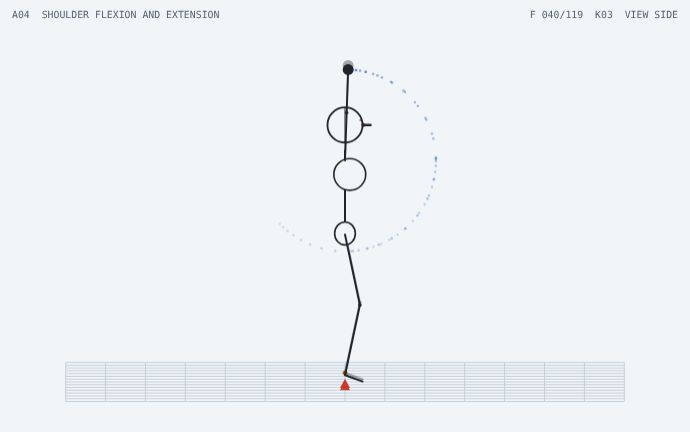

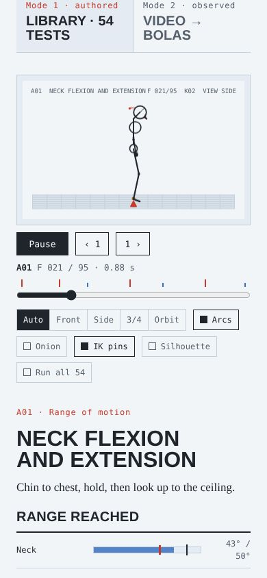
The sheets, step by step
Grouped by working session. Click any sheet to view it full size; use the arrow keys to move through them.

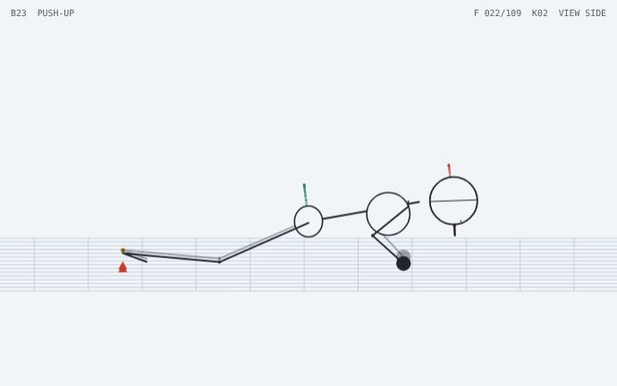

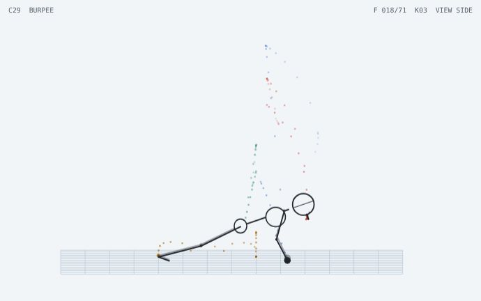

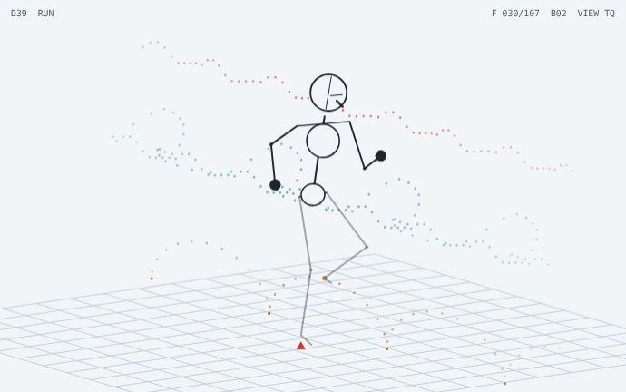
Show 10 more from this step

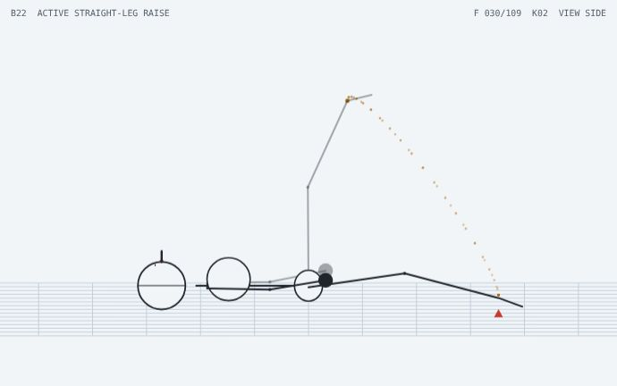

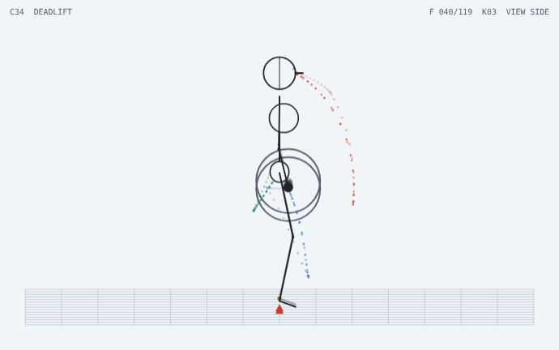

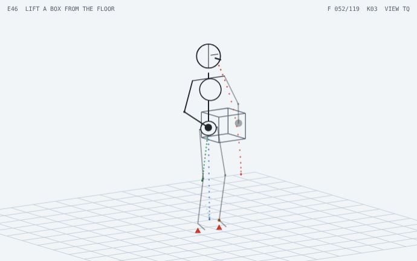

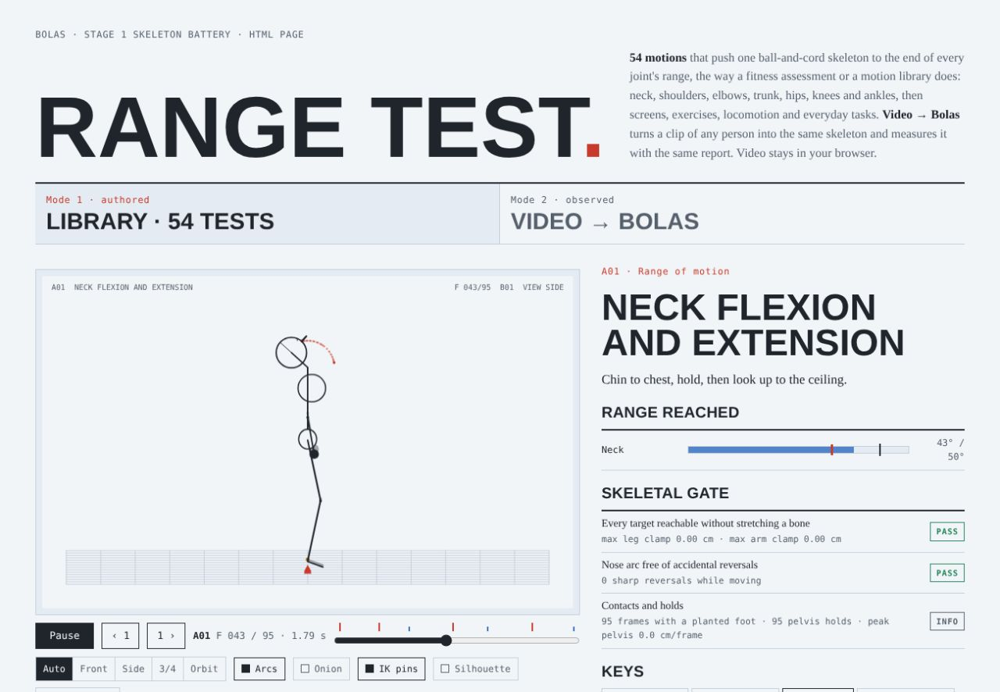

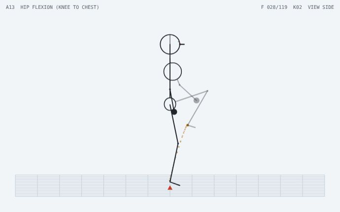

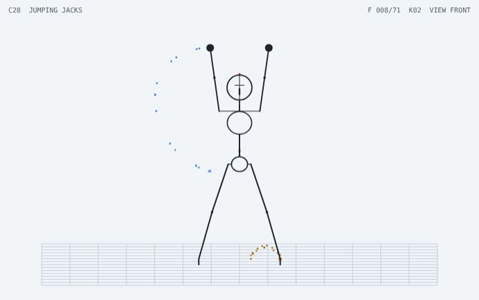

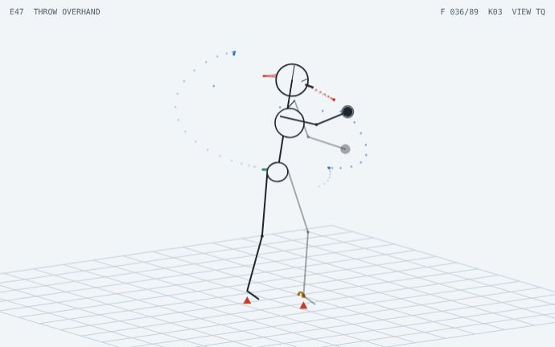

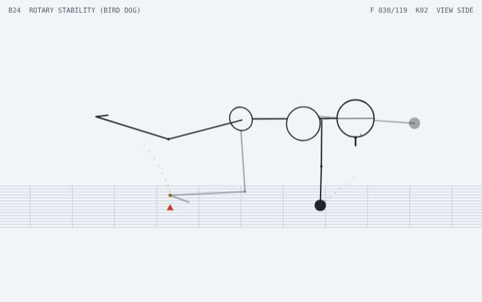

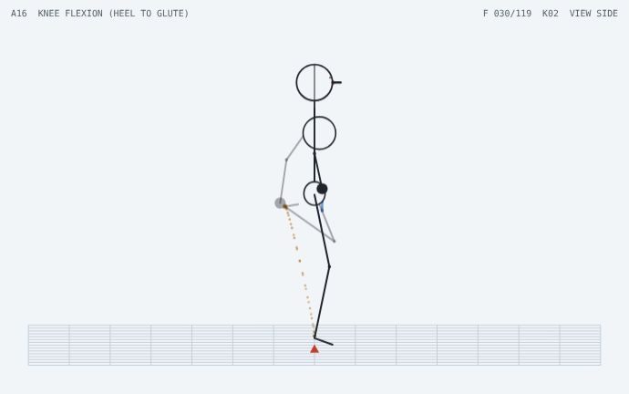

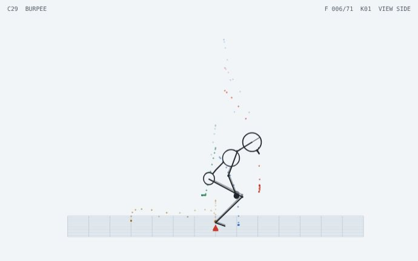

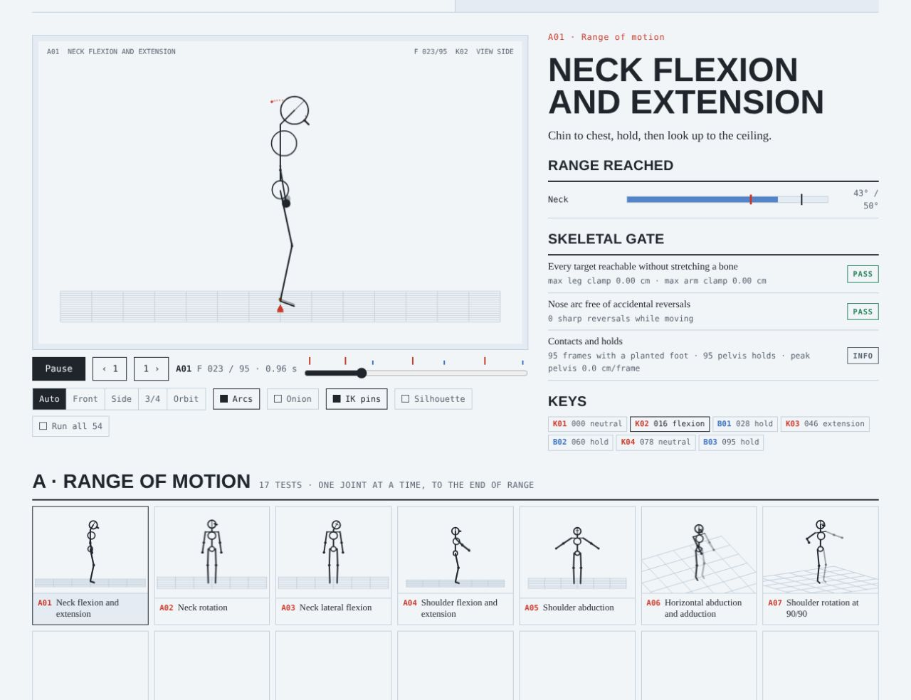

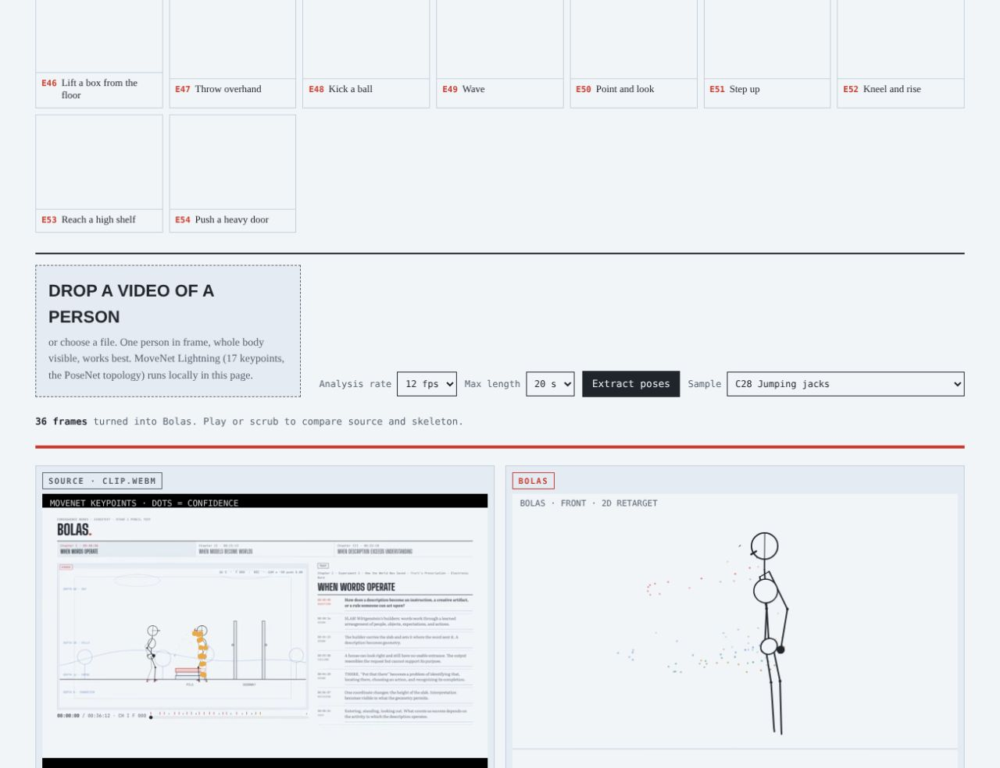

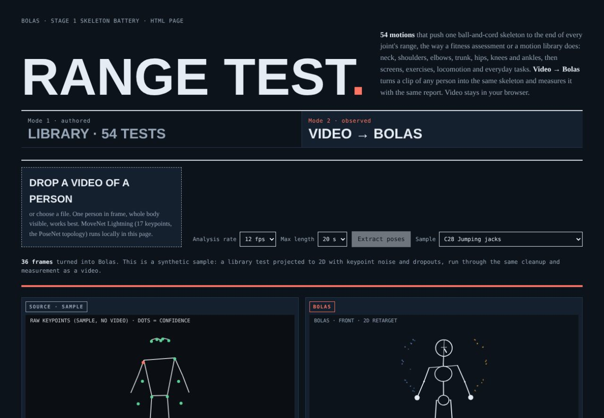
What came out of it
Carried forward
The joint limits become the checker that every later world is run through.